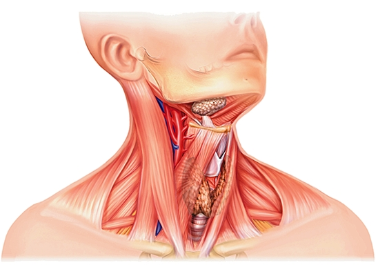

En anatomie, le cou est, chez un certain nombre de vertébrés, la région du corps qui est située entre la tête et le thorax. Le cou a plusieurs fonctions : il soutient et donne à la tête sa mobilité, laisse passage à plusieurs éléments viscéraux du système nerveux, des appareils digestif, ventilatoire et phonatoire, permet la vascularisation de la tête et joue un rôle dans le métabolisme général et phosphocalcique.